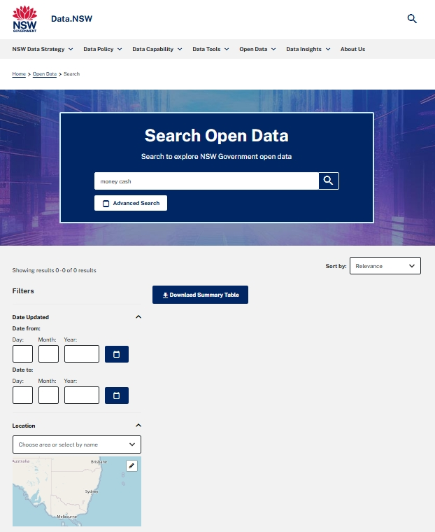
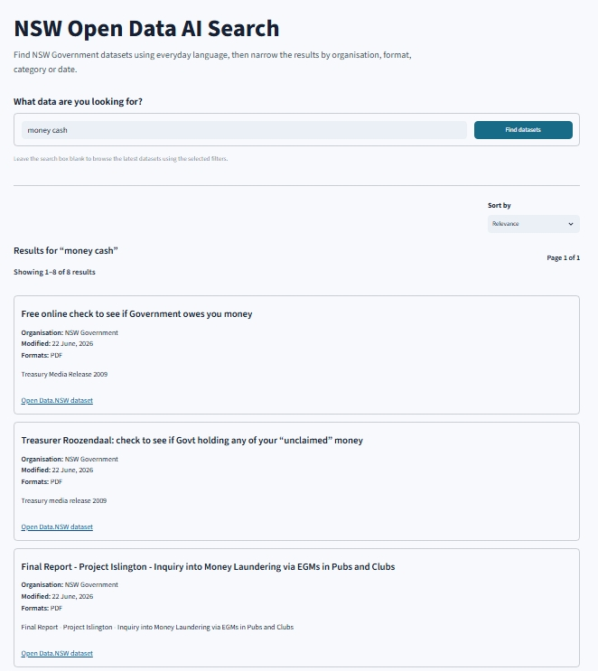
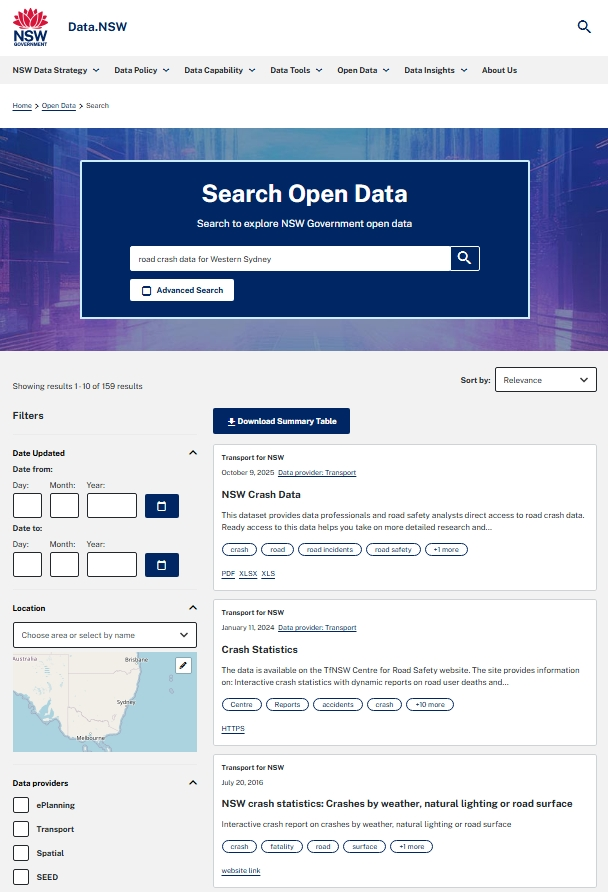
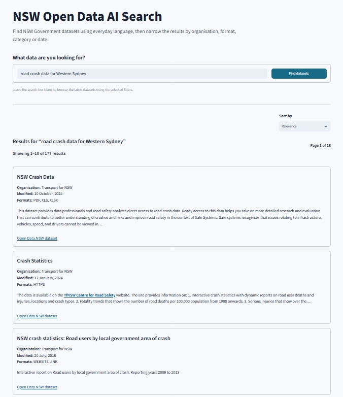
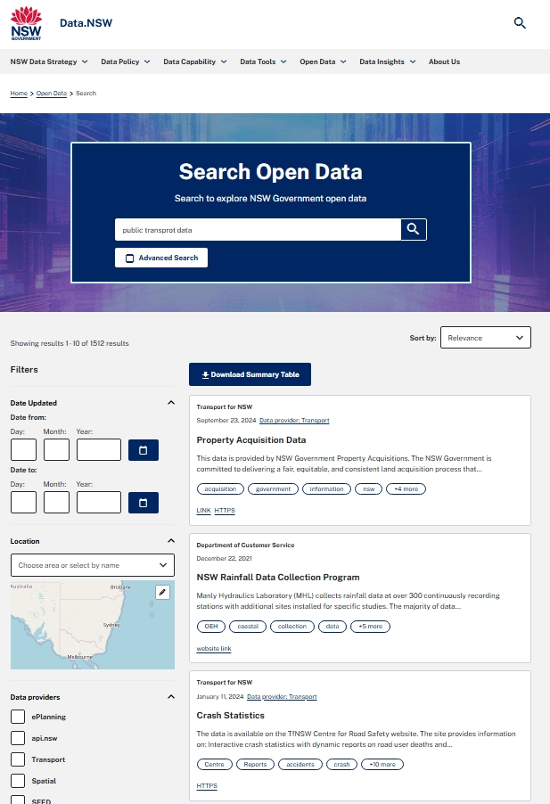
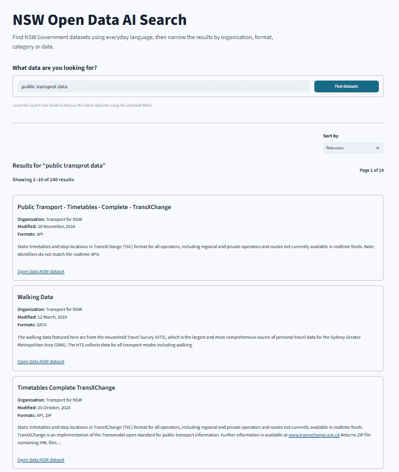

Project Overview
NSW Open Data AI Search is a publicly hosted search application designed to make NSW Government datasets easier to discover using everyday language. It searches approximately 17,000 catalogue records collected from the Data.NSW open data portal.
The application combines semantic search with field-aware keyword retrieval. Semantic search identifies datasets with conceptually similar content, while keyword search preserves strong matches across titles, descriptions, organisations, subjects and resource information.
The project also evaluates whether this hybrid approach can improve dataset discovery for selected queries when compared with the standard Data.NSW catalogue search. This includes queries that use everyday wording, combine several search concepts or contain minor spelling errors.
The finished solution includes a responsive Streamlit interface, structured filters, relevance controls, dataset-series grouping, result sorting and an automated daily refresh pipeline using GitHub Actions and GitHub Releases.
Live Application
The completed search application is publicly available through Streamlit Community Cloud and works across desktop and mobile devices.
Users can enter a natural-language query, browse recently updated datasets, apply structured filters and open the original catalogue record on Data.NSW.
Open Live ApplicationData Source
The application uses publicly available catalogue metadata from the Data.NSW open data portal, accessed through the CKAN package search API.
API endpoint: Data.NSW CKAN package search API
The collected metadata includes dataset titles, descriptions, organisations, tags, groups, modification dates, resource formats, resource URLs and other catalogue fields used for search and filtering.
Objective
The main question explored in this project was:
How can AI-assisted hybrid search make NSW Government open datasets easier to discover using natural-language queries, and when can it improve on standard catalogue search?
Supporting questions included:
- Can semantic search retrieve relevant datasets when a user's wording differs from the catalogue metadata or contains minor spelling errors?
- Can keyword retrieval preserve exact matches across dataset titles, organisations, subjects and resource information?
- How can semantic and keyword results be combined into one practical ranking?
- How can weak or unrelated results be removed before they are displayed?
- How do the application's highest-ranked results compare with Data.NSW search for the same query?
- Can the application recover useful results when the standard catalogue search returns no matches?
- How can repeated records from the same dataset series be presented more clearly?
- How can users narrow results by organisation, format, category, modification date and machine-readable availability?
- How can the catalogue and search indexes be refreshed automatically without interrupting the hosted application?
Tools Used
Project Workflow
The project follows an end-to-end search, deployment and refresh workflow, moving from live catalogue collection through to production search indexes and a publicly hosted application.
- Collected the complete Data.NSW catalogue through the CKAN API using paginated requests.
- Cleaned and standardised nested catalogue metadata.
- Validated required fields, identifiers, resource metadata and output structure.
- Generated compact search documents from titles, descriptions, organisations, subjects and resource information.
- Created semantic embeddings using a Sentence Transformers model.
- Created field-aware TF-IDF indexes for multiple metadata fields.
- Combined semantic and keyword rankings through weighted hybrid retrieval.
- Applied query-level and result-level relevance controls.
- Grouped related catalogue records into dataset-series results.
- Built a responsive Streamlit interface with filters, sorting and pagination.
- Automated catalogue collection, index rebuilding, testing and release publishing through GitHub Actions.
Search Architecture
1. Semantic Search
The semantic search component uses the sentence-transformers/all-MiniLM-L6-v2 model to convert catalogue records and user queries into numerical embeddings.
This allows the application to identify conceptually related datasets even when the user's wording is different from the terminology used in a dataset title or description.
2. Field-Aware Keyword Search
The keyword component uses TF-IDF retrieval across separate metadata fields rather than treating each catalogue record as one undifferentiated block of text.
The indexed fields include:
- Dataset title
- Description
- Organisation
- Subjects, tags and categories
- Resource formats and resource information
3. Hybrid Ranking
Semantic and keyword candidates are combined using weighted reciprocal rank fusion, with a stronger weighting applied to semantic similarity while still preserving useful exact keyword matches.
The current ranking uses a 70% semantic and 30% keyword weighting.
4. Relevance Controls
Query-level relevance checks prevent clearly unrelated searches from producing misleading result lists. Result-level thresholds then remove weak matches and low-quality ranking tails before results are shown.
5. Dataset-Series Grouping
Some catalogue records represent different years or editions of the same dataset series. The application detects these relationships and groups them into one result card, helping users browse repeated records more clearly.
Application Features
- Natural-language search across the Data.NSW catalogue
- Semantic and field-aware keyword hybrid retrieval
- Relevance filtering for weak or unrelated results
- Dataset-series grouping for repeated catalogue records
- Filtering by resource format
- Filtering by publishing organisation
- Filtering by Data.NSW category
- Filtering by modification date range
- Machine-readable resource filter
- Sorting by relevance or last modified date
- Pagination for larger result sets
- Recently updated dataset browsing
- Direct links to original Data.NSW catalogue records
- Responsive desktop and mobile interface
Search Evaluation
The application was compared with the standard Data.NSW catalogue search using identical query text, no additional filters and relevance sorting in both interfaces.
These examples provide a small qualitative comparison rather than a formal benchmark. They demonstrate how semantic retrieval, hybrid ranking and spelling tolerance can improve selected searches while still preserving strong direct catalogue matches for clear, well-structured queries.
Everyday wording: “money cash”
Data.NSW returned no results for this query. The AI search returned eight results and placed two records relating to unclaimed government money at the top.
This demonstrates how semantic retrieval can connect broad everyday wording with catalogue concepts that do not use the exact query phrase.

Data.NSW search
The standard catalogue search returned no matching datasets for the query.

NSW Open Data AI Search
The application identified records relating to government money and unclaimed funds.
Well-structured query: “road crash data for Western Sydney”
Both systems ranked NSW Crash Data and Crash Statistics as the first two results, showing that the hybrid search preserved the strongest direct catalogue matches for a clear and well-structured query.
The results then differed. The AI search ranked NSW crash statistics: Road users by local government area of crash third, while Data.NSW ranked a dataset organised by weather, lighting and road-surface conditions.
The LGA-based result is particularly useful for a query focused on Western Sydney because it supports geographic analysis at the local-government-area level. This example shows how the application can retain strong direct matches while giving additional weight to records that better reflect the location component of the query.

Data.NSW search
The standard search returned two strong leading crash datasets, followed by a dataset focused on weather, lighting and road-surface conditions.

NSW Open Data AI Search
The application preserved the same two leading datasets and ranked an LGA-based crash dataset higher for the location-focused query.
Misspelling tolerance: “public transprot data”
This query contains a realistic misspelling of the word transport. Data.NSW returned results including property acquisition, rainfall and crash datasets, which did not closely represent the user's likely search intent.
The AI search instead ranked public-transport timetable data first, followed by travel-survey and related timetable records. This demonstrates that the semantic component can preserve the likely topic of a query when an important term contains a minor spelling error.

Data.NSW search
The highest-ranked records were only partially related to the intended public-transport topic.

NSW Open Data AI Search
The application retained the intended transport topic and returned directly relevant timetable and travel datasets.
Evaluation Summary
The examples suggest that the hybrid approach provides the most additional value when users enter everyday wording, combine several search concepts or make a minor spelling error. It can also preserve strong direct matches for well-structured queries while improving the relevance of secondary results.
The project is not intended to claim that the application will outperform Data.NSW search for every query. Search quality varies according to the wording of the query, the available catalogue metadata and the possible interpretations of broad search terms.
Automated Daily Refresh
The catalogue and search indexes are refreshed automatically through a scheduled GitHub Actions workflow.
The automated workflow:
- Collects the latest Data.NSW catalogue metadata
- Cleans and validates the catalogue records
- Regenerates semantic embeddings
- Rebuilds the field-aware keyword indexes
- Runs the automated test suite
- Packages the production search files
- Publishes the latest verified package through GitHub Releases
The hosted application checks for a newer release, verifies its manifest and file checksums, installs the updated indexes and reloads the search resources. The previous verified index remains available if an update cannot be downloaded or validated.
Testing and Validation
Automated tests are run as part of each refresh workflow before a new search package is published.
Testing covers areas including:
- Catalogue cleaning and validation
- Search-document generation
- Structured filter behaviour
- Semantic and keyword index compatibility
- Search ranking and result structure
- Dataset-series grouping
- Relevance filtering
- Release packaging and checksum verification
Project Outputs
The completed project includes the public Streamlit application, a reproducible data and indexing pipeline, automated tests, scheduled catalogue refreshes and production search-index releases.
View the live application to search the current catalogue, or open the GitHub repository for the complete technical workflow, source code, methodology, test suite and deployment configuration.
Open Live Application View GitHub RepositoryLimitations
The application is a portfolio search system built on public catalogue metadata and should not be treated as an official replacement for the Data.NSW portal.
- Search quality depends on the completeness and consistency of Data.NSW catalogue metadata.
- The application indexes metadata rather than the full contents of every dataset or resource.
- Metadata modification dates do not necessarily indicate when the underlying data was last updated.
- Resource formats and categories depend on publisher-entered metadata and may be incomplete or inconsistent.
- Machine-readable classification is rule-based and should be interpreted as an estimate.
- The project does not validate whether every listed resource URL is currently active.
- Relevance thresholds were calibrated using representative development queries and may not cover every search pattern.
- Misspelling tolerance depends on the remaining query context and may decrease when several words are heavily misspelt or the query is extremely short.
- The comparison with Data.NSW is based on a small qualitative sample rather than a statistically representative benchmark.
- Search rankings may change as catalogue metadata, model behaviour or retrieval settings are updated.
- Streamlit Community Cloud may place the application into an inactive state after extended periods without use, resulting in a slower initial load.